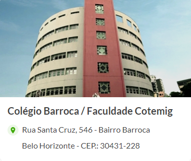
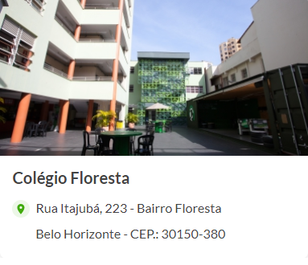
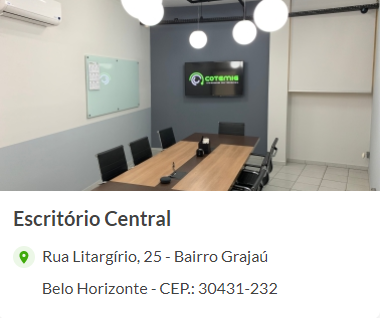

Ligue agora: (31) 3213-8666
FACULDADE COTEMIG
inove no novo mundo com a gente!
Escolha como você vai mudar o mundo
Do Ensino Médio Profissionalizante à Pós-graduação, o COTEMIG oferece o que
você precisa para fazer a diferença - e protagonizar a história.
Colégio Técnico em
Informática
ensino médio + técnico em
informática
Escola de referência
Google
Graduações
Sistemas de Informação
Análise e Desenvolvimento
de Sistemas
Ciência da Computação
Colégio Técnico em
Informática
ensino médio + técnico em
informática
Escola de referência
Google
Colégio Técnico em
Informática
ensino médio + técnico em
informática
Escola de referência
Google
Nossas Unidades
O COTEMIG tem duas unidades de ensino em Belo Horizonte para quem quer se profissionalizar em
tecnologia com uma base inovadora, inspiradora e de qualidade, além de uma central administrativa.



Central de atendimento
(31) 3213.8666
Notícias e Novidades

DOCUMENTOS
INSTITUCIONAIS DA
FACULDADE COTEMIG
Em 23 de Maio de 2022

CONFIRA OS CARGOS DO
SETOR DE TECNOLOGIA EM
ASCENSÃO NO BRASIL
Em 9 de Abril de 2022

COTEMIG EXPANDE SEU
ENSINO INOVADOR AO
FIRMAR PARCERIA COM O
CNSD
Em 14 de Março de 2022

CONNECT: O NOVO MODELO
DE ENSINO DA FACULDADE
COTEMIG PARA OS NOVOS
TEMPOS
Em 7 de Janeiro de 2022